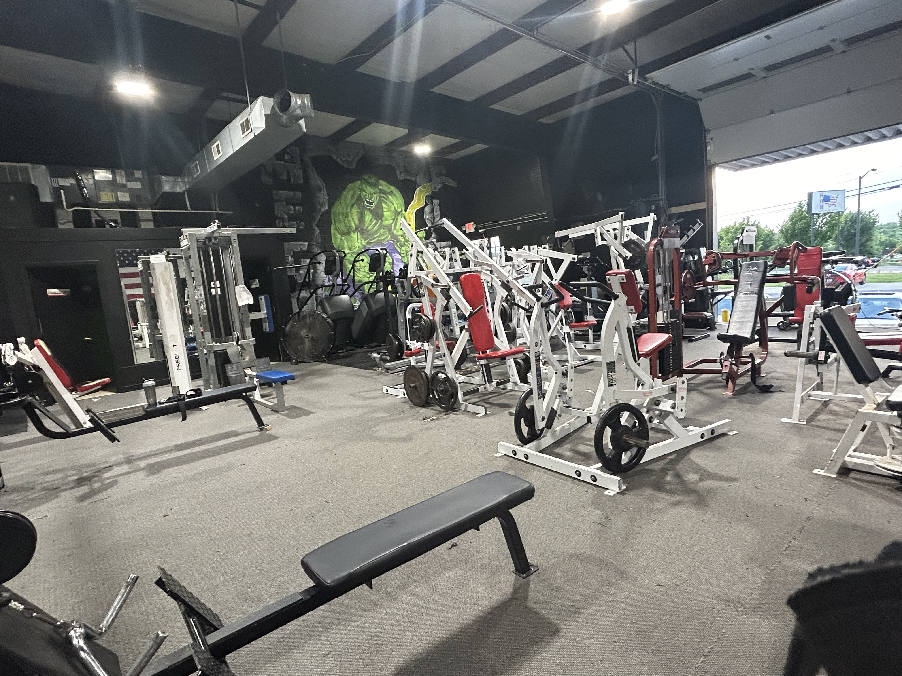
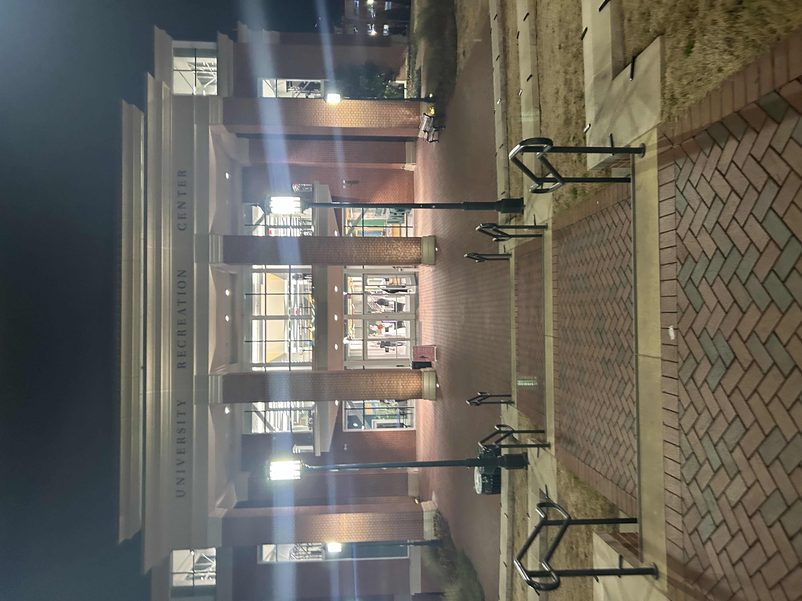

Home
Welcome to my hobby of Wellness Bodybuilding, where fitness meets a balanced lifestyle.
A hobby that I have pursued throughout my life is bodybuilding. Growing up, I played several sports, and during my senior year of high school, I lifted weights casually, mostly for athletic training. However, this hobby extended beyond school, and I began working out at my local YMCA until I graduated. I started taking bodybuilding more seriously during my first year at UNC Charlotte. Although I have yet to compete, I see a future in wellness bodybuilding. For now, I continue to train recreationally.
About
The Wellness Bodybuilding Women’s Division is a category in competitive bodybuilding designed for women who have a more athletic and curvier lower-body development compared to other divisions like Bikini or Figure.
Watch this TikTok
This division piques my interest because it is not often that taller women take the stage, and I would love the opportunity to change that. One day, I aspire to step into the spotlight and represent taller women with confidence, grace, and strength. It would be an honor to break stereotypes, inspire others, and showcase that beauty and talent come in all heights.
Best Times

Optimal workout times depend on personal schedules, but mornings can boost energy for the day.
- Early Morning (5:00 AM - 7:30 AM)
- Best for: Those who want a fresh start to their day.
- Pros: Fewer people, access to all equipment, boosts energy for the day.
- Cons: Requires waking up early, may take time to adjust.
- Late Morning (9:00 AM - 11:00 AM)
- Best for: People with flexible schedules or work-from-home individuals.
- Pros: Avoids the early morning rush, more space, body is fully awake.
- Cons: Some gyms start getting busier around 10:30 AM.
Best Locations
Whether at the gym or outdoors, finding a motivating environment is crucial for progress.
Here are a few of my favorites:
-
Location 1
- Best for: Old school bodybuilding aesthetics, iron weights, open 24/7, has more than one facility
- Locations: University location, Northlake location
-
Location 2
- Best for: Easy on-campus access for students, has a variety of fitness classes, swimming pool and outdoor courts.
- Facilities: University recreation (UNC Charlotte's campus)
How
Proper technique, consistency, and recovery are key to effective bodybuilding.
How to get started into bodybuilding:
- Find a passion and love for the sport
- Find a gym that makes you comfortable and happy
- Stay consistent and create healthy habits
- Food is fuel!
- Rest and recovery is essential for bodybuilding
- Competing is not for everyone, although if you are interested, look for local shows and coaches that will help mentally and physically.
Why
Wellness bodybuilding promotes long-term health, strength, and confidence.
Bodybuilding is my hobby because it provides a creative outlet for shaping my physique. Going to the gym energizes me and helps clear my mind, especially after long days. Seeing the physiques of other competitors during competitions not only inspires me but also pushes me to pursue greatness both in and outside of the gym. Bodybuilding is about growth and patience; it's a challenging journey that attracts people from all walks of life.
Ai prompts
Create A well defined-definition of wellness bodybuilding division:
How to insert a tiktok video in html, css, and javascript?